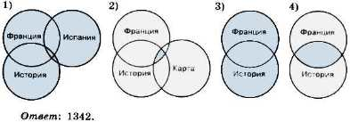
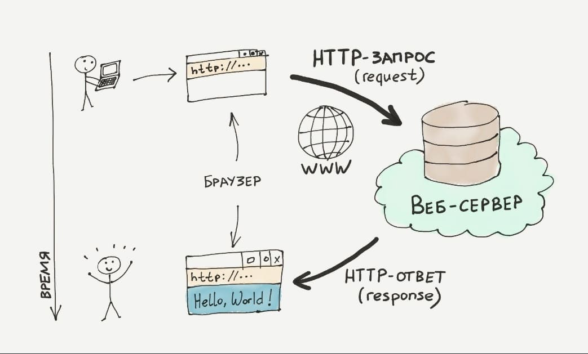
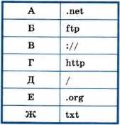
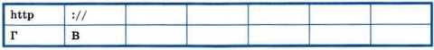
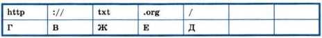
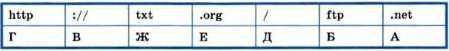

Основы WWW
Всемирная паутина, или WWW — это сервис, с помощью которого пользователи сети получают доступ к информационным ресурсам, хранящимся на компьютерах в разных частях света. Основой WWW являются веб-страницы и веб-сайты, на которых информация представлена в виде гипертекстовых и гипермедийных документов. Вы уже неоднократно путешествовали по Всемирной паутине с помощью браузеров, осуществляя переходы по гиперссылкам; искали ответы на интересующие вас вопросы с помощью поисковых систем по ключевым словам.
Задача 1. Даны запросы к поисковому серверу. Для обозначения логической операции ИЛИ в запросах используется символ |, а для логической операции И — символ &.
- Франция | Испания | История
- Франция & Карта & История
- Франция | История
- Франция & История
Изобразите графически количество страниц, которые найдёт поисковый сервер по каждому запросу. Расположите номера запросов в порядке убывания количества страниц, которые найдёт поисковый сервер по каждому запросу. Решение Изобразим результаты выполнения запросов графически — с помощью кругов Эйлера:  Ещё одна возможность поиска нужного документа в Интернете — это использование адреса документа. Адрес документа в Интернете — его URL (Uniform Resource Locator — универсальный указатель ресурса) состоит из следующих частей:
- название протокола со знаками :// в конце названия (HTTP);
- доменное имя сервера со знаком / в конце имени (Доменное имя);
- полное имя файла на сервере, где он находится.
Рассмотрим пример адреса (URL):
http://fcior.edu.ru/card/701/algebraicheskie-uravneniya.html
Первая часть адреса — это имя протокола. Оно определяет тип документа. Запись http:// указывает на то, что это веб-страница. Протокол HTTP — Hyper Text Transfer Protocol — протокол передачи гипертекстовых файлов. Для других типов документов протоколы могут быть другими.

Вторая часть адреса — это доменное имя сервера, на котором хранится страница:
http://fcior.edu.ru/701/algebraicheskie-uravneniya.html
Третья часть адреса — полное имя файла, включающее путь к файлу, т. е. все каталоги, в которые следует последовательно зайти, чтобы открыть требуемый файл.
//fcior.edu.ru/card/701/algebraicheskie-uravneniya.html
Задача 2. Доступ к файлу ftp.net, находящемуся на сервере txt.org, осуществляется по протоколу http. В таблице фрагменты адреса файла закодированы буквами от А до Ж. Запишите адрес указанного файла в сети Интернет и последовательность букв, кодирующую этот адрес.  Решение Первая часть адреса файла — название протокола:  Вторая часть адреса — имя сервера (компьютера, на котором размещён файл):  Третья часть адреса — полное имя файла на компьютере:  Ответ: http://txt.org/ftp.net, ГВЖЕДБА.